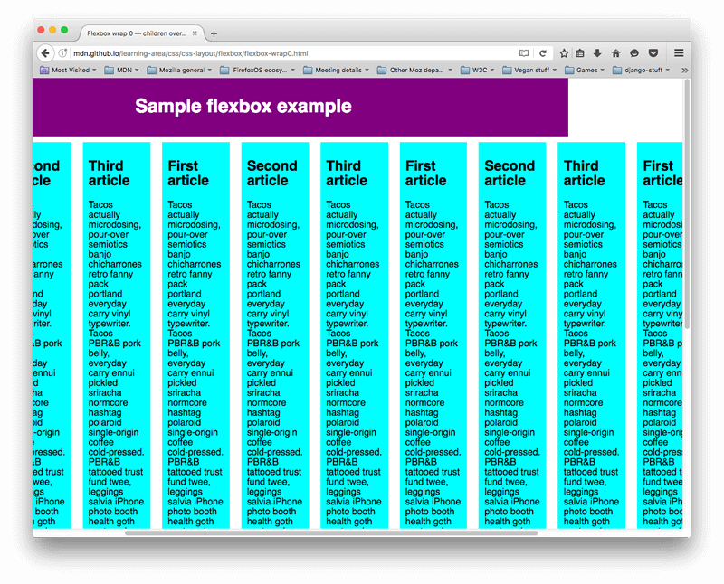

Flexbox is a one-dimensional layout method for laying out items in rows or columns. Items flex to fill additional space and shrink to fit into smaller spaces.
Introduction
Why Flexbox
For a long time, the only reliable cross browser-compatible tools available for creating CSS layouts were things like floats and positioning. These are fine and they work, but in some ways they are also rather limiting and frustrating.
The following simple layout requirements are either difficult or impossible to achieve with such tools, in any kind of convenient, flexible way:
- Vertically centering a block of content inside its parent.
- Making all the children of a container take up an equal amount of the available width/height, regardless of how much width/height is available.
- Making all columns in a multiple column layout adopt the same height even if they contain a different amount of content.
Specifying what elements to lay out as flexible boxes
To start with, we need to select which elements are to be laid out as flexible boxes. To do this, we set a special value of display on the parent element of the elements you want to affect. In this case we want to lay out the article elements, so we set this on the section (which becomes a flex container):
section {
display: flex;
}
Flex model - Axes
When elements are laid out as flexible boxes, they are laid out along two axes:

- The main axis is the axis running in the direction the flex items are being laid out in (e.g. as rows across the page, or columns down the page.) The start and end of this axis are called the main start and main end.
- The cross axis is the axis running perpendicular to the direction the flex items are being laid out in. The start and end of this axis are called the cross start and cross end.
- The parent element that has display: flex set on it (the section in our example) is called the flex container.
- The items being laid out as flexible boxes inside the flex container are called flex items (the article elements in our example).
Columns or rows
Flexbox provides a property called flex-direction that specifies what direction the main axis runs in (what direction the flexbox children are laid out in) — by default this is set to row, which causes them to be laid out in a row in the direction your browser's default language works in (left to right, in the case of an English browser).
Try adding the following declaration to your section rule:
flex-direction: column;
You'll see that this puts the items back in a column layout, much like they were before we added any CSS. Before you move on, delete this declaration from your example.
Wrapping
One issue that arises when you have a fixed amount of width or height in your layout is that eventually your flexbox children will overflow their container, breaking the layout. Have a look at our flexbox-wrap0.html example, and try viewing it live (take a local copy of this file now if you want to follow along with this example):
Here we see that the children are indeed breaking out of their container. One way in which you can fix this is to add the following declaration to your section rule:
flex-wrap: wrap;
Also, add the following declaration to your article rule:
flex: 200px;
Try this now; you'll see that the layout looks much better with this included:

We now have multiple rows — as many flexbox children are fitted onto each row as makes sense, and any overflow is moved down to the next line. The flex: 200px declaration set on the articles means that each will be at least 200px wide; we'll discuss this property in more detail later on. You might also notice that the last few children on the last row are each made wider so that the entire row is still filled.
But there's more we can do here. First of all, try changing your flex-direction property value to row-reverse — now you'll see that you still have your multiple row layout, but it starts from the opposite corner of the browser window and flows in reverse.
Flexible sizing of items
Let's now return to our first example, and look at how we can control what proportion of space flex items take up compared to the other flex items. Fire up your local copy of flexbox0.html, or take a copy of flexbox1.html as a new starting point (see it live).
First, add the following rule to the bottom of your CSS:
article {
flex: 1;
}
This is a unitless proportion value that dictates how much of the available space along the main axis each flex item will take up compared to other flex items. In this case, we are giving each article element the same value (a value of 1), which means they will all take up an equal amount of the spare space left after things like padding and margin have been set. It is relative to other flex items, meaning that giving each flex item a value of 400000 would have exactly the same effect.
Now add the following rule below the previous one:
article:nth-of-type(3) {
flex: 2;
}
Now when you refresh, you'll see that the third article takes up twice as much of the available width as the other two — there are now four proportion units available in total (since 1 + 1 + 2 = 4). The first two flex items have one unit each so they take 1/4 of the available space each. The third one has two units, so it takes up 2/4 of the available space (or one-half).
You can also specify a minimum size value inside the flex value. Try updating your existing article rules like so:
article {
flex: 1 200px;
}
article:nth-of-type(3) {
flex: 2 200px;
}
This basically states "Each flex item will first be given 200px of the available space. After that, the rest of the available space will be shared out according to the proportion units." Try refreshing and you'll see a difference in how the space is shared out.

The real value of flexbox can be seen in its flexibility/responsiveness — if you resize the browser window, or add another article element, the layout continues to work just fine.